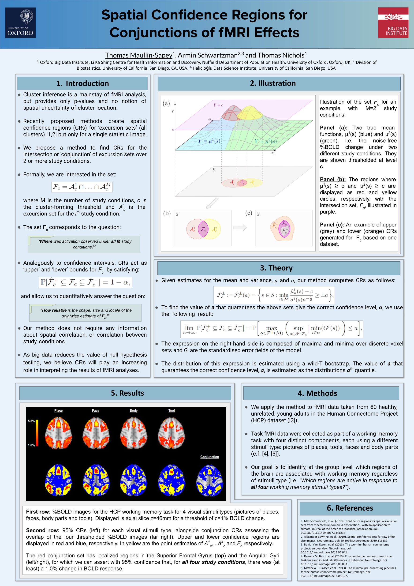
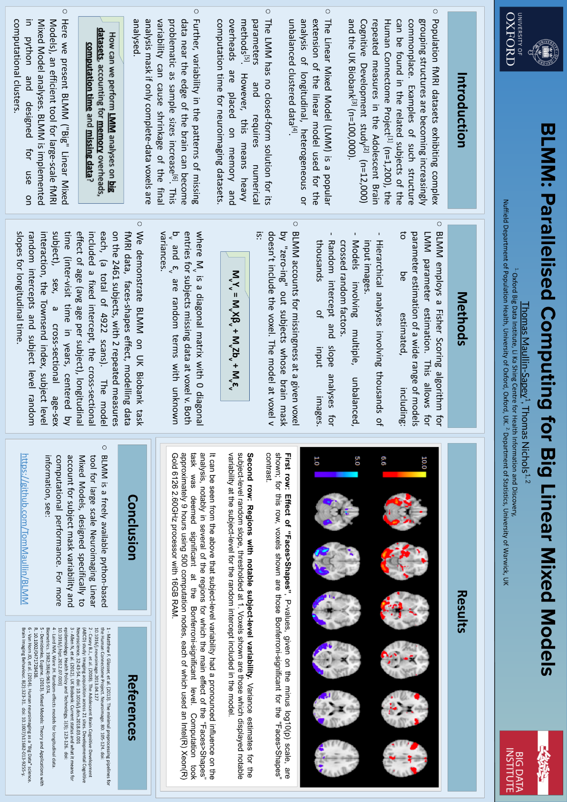
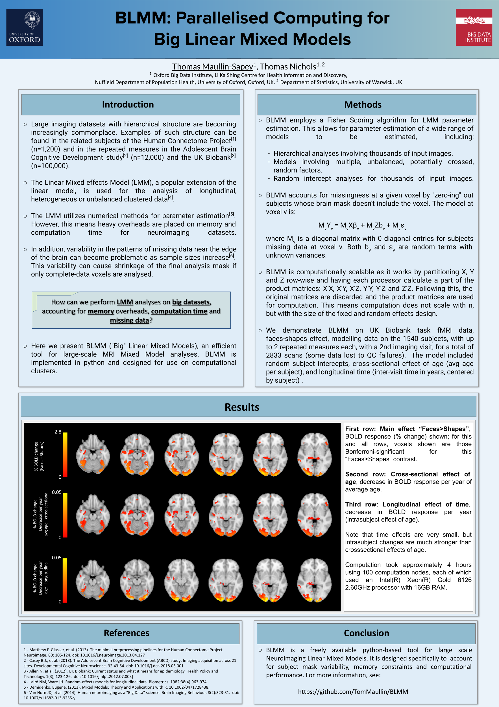
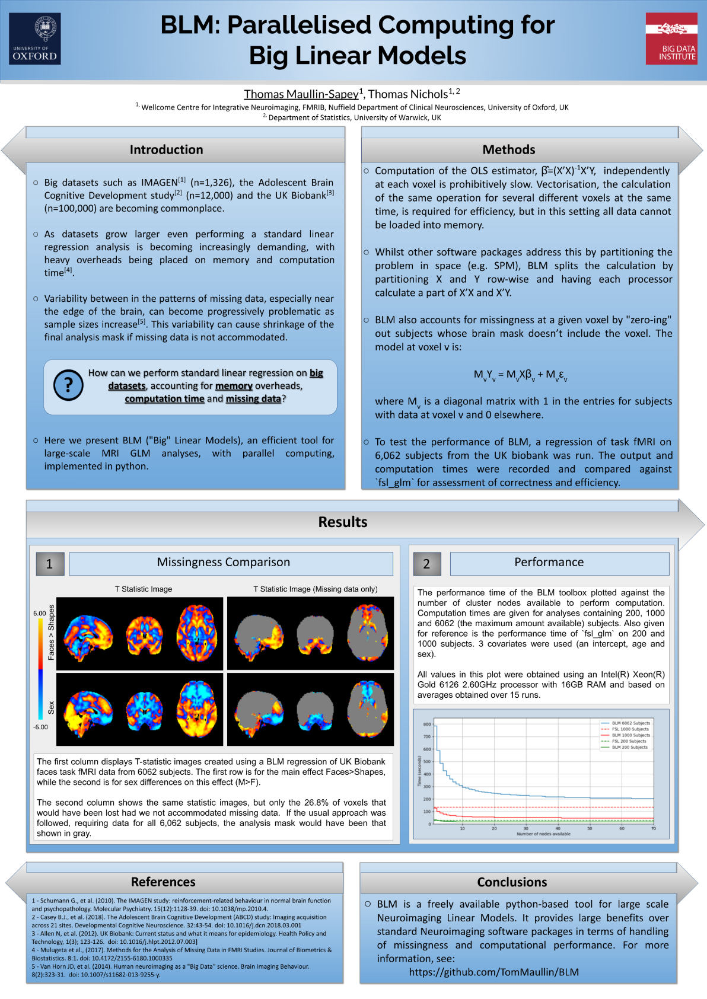

Spatial Confidence Regions for Conjunctions of fMRI Effects
Maullin-Sapey, T., Schwartzman, A. and Nichols, T.E. (2022). OHBM & RSS Conference Poster.
While cluster inference is a mainstay of fMRI analysis, the established tools can only provide p-values and no notion of spatial uncertainty of cluster location. Methods have been developed which crea... (see more)
(Press ESC to Exit)
(Tap Away to Exit)

BLMM: Parallelised Computing for Big Linear Mixed Models
Maullin-Sapey, T. and Nichols, T.E. (2021). SMI Conference Poster.
As sample sizes grow, researchers face mounting pressure to detect and account for complex covariance structures induced by the grouping factors present in the experimental design. Methods conventiona... (see more)
(Press ESC to Exit)
(Tap Away to Exit)

BLMM: Parallelised Computing for Big Linear Mixed Models
Maullin-Sapey, T. and Nichols, T.E. (2020). OHBM Conference Poster.
Population neuroimaging datasets have transformed fMRI sample sizes from tens to thousands of subjects. However, since many datasets cannot be shared due to ethical concerns or restrictive data usage ... (see more)
(Press ESC to Exit)
(Tap Away to Exit)

BLM: Parallelized Computing for Big Linear Models
Maullin-Sapey, T. and Nichols, T.E. (2019). OHBM Conference Poster.
Big datasets such as IMAGEN (n=1,326), the Adolescent Brain Cognitive Development study (n=12,000) and the UK Biobank (n=100,000) are becoming commonplace. As datasets grow larger even performing a st... (see more)
(Press ESC to Exit)
(Tap Away to Exit)
Detecting and Interpreting Heterogeneity and Publication Bias in Image-Based MetaAnalyses
Maullin-Sapey, T., Maumet, C. and Nichols, T.E. (2018). OHBM Conference Poster.
With the increase of data sharing, meta-analyses are becoming increasingly important in the neuroimaging community. They provide a quantitative summary of published results and heightened confidence d... (see more)
(Press ESC to Exit)
(Tap Away to Exit)
Viewing FSL results with SPM and vice versa
Maullin-Sapey, T. et al. (2017). OHBM Conference Poster.
A growing number of efforts are emerging in the neuroimaging community to increase reproducibility of research findings. In an attempt to facilitate publishing of neuroimaging data and metadata, the N... (see more)
(Press ESC to Exit)
(Tap Away to Exit)